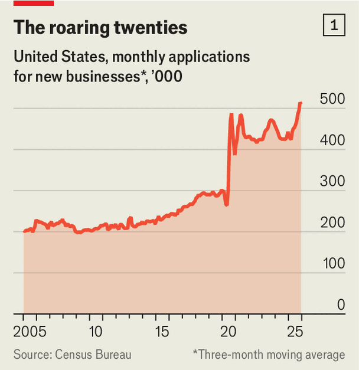
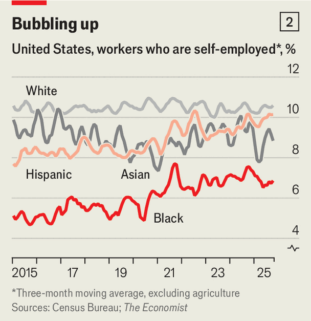

Finance & economics | Diversity hires
Kris Hale founded Dope Pieces, an artisanal puzzlemaker, in 2018. But the company really took off, she says, after the covid-19 lockdowns sent people “puzzle crazy”. They also prompted millions of other Americans to launch startups, and today the boom is still going. The Census Bureau counted a record-breaking 5.7m applications to establish new businesses in 2025 (see chart 1). That poses some puzzles for economists. Why have entrepreneurs been so busy since the pandemic? And why has the surge been almost entirely among those who, like Ms Hale, are in ethnic minorities?

The Census Bureau’s monthly Current Population Survey shows that, since 2019, the share of all American adults who are self-employed has increased from 9.4% to 9.8%. This is equivalent to around 1.3m new entrepreneurs. Yet the self-employment rate among white Americans has barely budged (see chart 2), while that for black ones has risen by a percentage point. That for Hispanic Americans has leapt by 1.8 percentage points.
Several aspects of the pandemic made it a good time to start a new business. Widespread layoffs prompted millions of people to consider a career change. Stimulus cheques and fewer opportunities to spend money boosted savings, providing would-be entrepreneurs with seed capital. Rock-bottom interest rates made it cheap to borrow more. And working from home was useful for those pursuing side hustles.

People from minority groups were more likely to have seized the moment. Catherine Fazio of Boston University, together with colleagues, has analysed data on 2.8m business registrations filed in 2019 and 2020. They found that business formation grew faster in neighbourhoods with more black people. Another study by the Brookings Institution, a think-tank, used data from the Federal Reserve’s survey of consumer finances. This showed that, between 2019 and 2022, the share of business-owning families that were black rose from 5% to 8%. The share for Hispanics and Latinos jumped from 4% to 7%; white Americans’ share fell from 80% to 73%.
To explain the trend, first consider the “George Floyd effect”. Mr Floyd’s murder by police officers, in 2020, sparked a reckoning on race that left many Americans eager to show support for black people, including those who are business owners. Consumer spending, charity support and bank lending all boosted demand—and probably inspired would-be founders, too. “I think that’s part of the story for why attitudes towards entrepreneurship in those communities may have changed,” says David Robinson of Duke University.
Some of the boom might also be down to “necessity entrepreneurship”. Black Americans were hit especially hard economically by the pandemic: in late 2020 their unemployment rate was 10%, nearly twice that of white Americans. Some of the jobless may have struck out on their own not because they wanted to, but because they had no choice. “There’s the good kind [of self-employment] where…you’re an entrepreneur,” says Victor Bennett of the University of Utah. “And there’s the less good kind where you’re struggling to find something in the workforce.”
Perhaps the most convincing explanation for all the new minority-led businesses is that poorer neighbourhoods, which had fewer startups to begin with, are catching up. Entrepreneurs from minority groups often used to struggle to attract capital. Now that may be changing, suggests research by Dr Fazio, Jorge Guzman of Columbia University and Scott Stern of the Massachusetts Institute of Technology. “We believe that there was pent up potential in neighbourhoods that historically have faced much higher obstacles to starting and funding businesses,” says Dr Fazio.
Unfortunately, America’s startup boom is unlikely to create many jobs. Census Bureau data show that firms that are less than five years old account for just 14% of total employment; those less than a year old account for a mere 3%. Even this appears to be shrinking. Since 2021 such startups with paid employees have on average employed just 4.7 of them, down from 5.4 in the preceding decade. The furious pace at which Americans are establishing new firms will be cold comfort to those who remain jobless. Then again, it may spur some to strike out on their own. ■
For more expert analysis of the biggest stories in economics, finance and markets, sign up to Money Talks, our weekly subscriber-only newsletter.